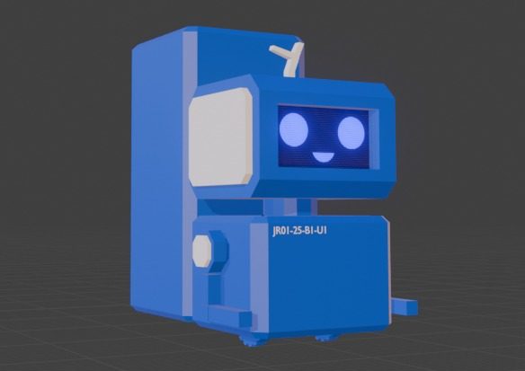
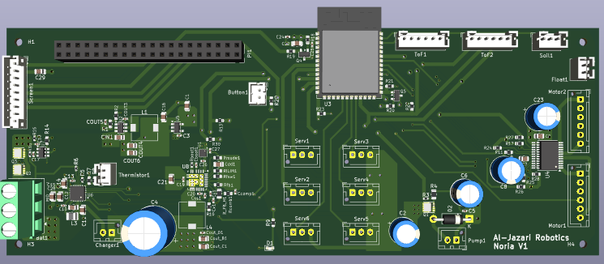

Project Goals
Plants can give a home a natural soothing aesthetic, provide organic and fresh crops, and are good for the environment. However, many people don't have the time to care for every plant or lack the knowledge on how often or how much to water every plant. The risk of killing a plant can put many people off home gardening, so I set out to create a bot that takes the risk out of the equation.
This robot should autonomously go around a user's house, map every potted plant it can reach, measure the soil to dispense exactly as much water as each plant needs by using a preprogrammed database of different plants' watering needs.

Key Components
| Microcontroller | ESP32 + Raspberry Pi Zero 2w |
| Sensors | Capacitive soil sensor, ToF sensor for obstacles, OV5647 camera, Float sensor |
| Actuation | Peristaltic pump, Geared motor wheels, Servos for joints |
| Power Supply | 2s2p li-ion pack, 5V buck converter, 3.6V buck converter, 3.3V LDO |
| Interface | A server hosted on the Pi Zero 2W will communicate with an App on the user's phone + an LCD for displaying basic information |
| Communication | Wi-Fi for Pi to app communication and UART for PI to ESP32 communication |
Circuit Design
This board takes in power from an external battery pack through a screw terminal, the ESP32 and Pi control various peripherals through JST connectors for easy assembly.

What I Learned
This project has been a great jump in complexity from my previous work, it has allowed me to push my understanding of embedded systems and robotics but also exposed me to some gaps in my knowledge. Here are some of the challenges I encountered:
Challenge #1 — Tailoring my product to potential market needs
As a fresh engineering graduate, I struggled to apply what I learnt to the real world. It took a lot of research to understand the kind of customers my product would appeal to and what their needs would be to center costs, feautres, and aesthetics around those needs. I experimented with different approaches such as an automatic mini greenhouse before settling on a roomba inspired design to accomadate outdoor and decorative indoor plants.
Challenge #2 — Sensor calibration
The soil moisture sensor, having analog output, needed careful calibration. It wasn't enough to use hardcoded figures as the figures will have to be recalculated if the sensor was repleaced or as it got older. To write firmware that could routinely re-calibrate the moisture sensor, I had to research and implement good signal processing practices.
Challenge #3 — System wide syncronization
This product had an ESP32 as the main controller, but also used a I2C based chip for charging, a Pi Zero 2W for image processing and server hosting, and an app for user interface. Ensuring all these parts worked coherently together proved difficult, for example the ESP32 shouldn't move before the PI was online and running as the PI along could process images to guide the robot's movements.